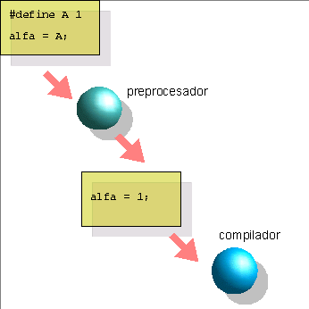
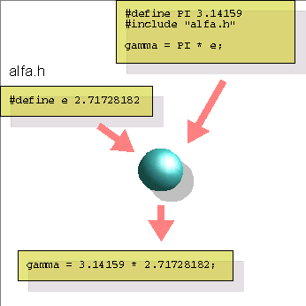

El compilador C tiene un componente auxiliar llamado preprocesador, que actúa en la primera etapa del proceso de compilación. Su misión es buscar, en el texto del programa fuente entregado al compilador, ciertas directivas que le indican realizar alguna tarea a nivel de texto . Por ejemplo, inclusión de otros archivos, o sustitución de ciertas cadenas de caracteres (símbolos o macros) por otras. El preprocesador cumple estas directivas en forma similar a como podrían ser hechas manualmente por el usuario , utilizando los comandos de un editor de texto ("incluir archivo" y "reemplazar texto"), pero en forma automática.
Una vez cumplidas todas estas directivas, el
preprocesador entrega el texto resultante al resto de las etapas de
compilación, que terminarán dando por resultado un
módulo objeto.
El preprocesador sirve para eliminar redundancia y aumentar la expresividad de los programas en C, facilitando su mantenimiento . Si una variable o función se utiliza en varios archivos fuente, es posible aislar su declaración, colocándola en un único archivo aparte que será incluido al tiempo de compilación en los demás fuentes. Esto facilita toda modificación de elementos comunes a los fuentes de un proyecto. Por otro lado, si una misma constante o expresión aparece repetidas veces en un texto, y es posible que su valor deba cambiarse más adelante, es muy conveniente definir esa constante con un símbolo y especificar su valor sólo una vez, mediante un símbolo o macro.
Los símbolos indicados con una directiva de definición #define se guardan en una tabla de símbolos durante el preprocesamiento. Habitualmente se llama símbolos a aquellas cadenas que son directamente sustituibles por una expresión, reservándose el nombre de macros para aquellos símbolos cuya expansión es parametrizable (es decir, llevan argumentos formales y reales como en el caso de las funciones). La cadena de expansión puede ser cualquiera, no necesariamente un elemento sintácticamente válido de C.
|
El preprocesador realiza ediciones automáticas, en línea, de los fuentes antes de entregar el resultado al compilador. Una de las funciones del preprocesador es sustituir símbolos, o cadenas de texto dadas, por otras. La directiva #define establece la relación entre los símbolos y su expansión o cadena a sustituir.
|
 |
Las directivas del preprocesador no pertenecen al lenguaje C en un sentido estricto. El preprocesador no comprende ningún aspecto sintáctico ni semántico de C. Las macros definidas en un programa C no son variables ni funciones, sino simplemente cadenas de texto que serán sustituidas por otras . Las directivas pueden aparecer en cualquier lugar del programa, pero sus efectos se ponen en vigor recién a partir del punto del programa en que aparecen y hasta el final de la unidad de traducción. Es decir, un símbolo o macro puede utilizarse después de la aparición de la directiva que la define, y no antes. Tampoco puede utilizarse en una unidad de traducción diferente (los símbolos de preprocesador no se "propagan" entre unidades de traducción salvo por el uso de directivas de inclusión).
Las directivas para incluir archivos suelen darse al principio de los programas, porque en general se desea que su efecto alcance a todo el archivo fuente. Por esta razón los archivos preparados para ser incluidos se denominan headers o archivos de cabecera. La implementación de la biblioteca standard que viene con un compilador posee sus propios headers, uno por cada módulo de la biblioteca, que declaran funciones y variables de uso general. Estos headers contienen texto legible por humanos, y están en algún subdirectorio predeterminado (llamado /usr/include en UNIX, y dependiendo del compilador en otros sistemas operativos). El usuario puede escribir sus propios headers, y no necesita ubicarlos en el directorio reservado del compilador; puede almacenarlos en el directorio activo durante la compilación. Un archivo fuente, junto con todos los archivos que incluya, es llamado una unidad de traducción.
En los párrafos anteriores, nótese que decimos declarar funciones, y no definirlas; la diferencia es importante y se verá con detalle más adelante. Recordemos por el momento que en los headers de la biblioteca standard no aparecen definiciones -es decir, textos- de funciones, sino solamente declaraciones o prototipos, que sirven para anunciar al compilador los tipos y cantidad de los argumentos, etc.
No se considera buena práctica de programación colocar la definición de una función de uso frecuente en un header. Esto forzaría a recompilar siempre la función cada vez que se la utilizara. Por el contrario, lo ideal sería compilarla una única vez, produciendo un módulo objeto (y posiblemente incorporándolo a una biblioteca). Esto ahorraría el tiempo correspondiente a su compilación, ocupando sólo el necesario para la linkedición.
|
 |
La directiva #include hace que el preprocesador inserte y preprocese otros archivos en el punto donde se indica la directiva. El resultado de preprocesar el archivo incluido puede ser definir otros símbolos y macros, o aun incluir otros archivos. Los archivos destinados a ser incluidos son habitualmente llamados archivos de cabecera o headers. |
Las directivas de inclusión son anidables, es decir, pueden incluirse headers que a su vez contengan directivas de inclusión.
Una característica interesante del preprocesador es que permite la compilación condicional de segmentos de la unidad de traducción, en base a valores de símbolos. Una directiva condicional es aquella que comprueba si un símbolo dado ha sido definido, o si su definición coincide con cierta cadena. El texto del programa que figura entre la directiva y su end será considerado sólo si la comprobación resulta exitosa. Los símbolos o macros pueden ser definidos al tiempo de la compilación, sin alterar el texto del programa, permitiendo así una parametrización del programa en forma separada de su escritura.
1) Si el programa dice:
a=2*3.14159*20.299322;
Es mucho más claro poner:
#define PI 3.14159
#define RADIO 20.299322
a=2*PI*RADIO;
2) Con estas directivas:
#include <stdio.h>
#include "aux.h"
#define MAXITEM 100
#define DOBLE(X) 2*X
Se incluye el header de biblioteca standard stdio.h, que contiene declaraciones necesarias para poder utilizar funciones de entrada/salida standard (hacia consola y hacia archivos).
Se incluye un header escrito por el usuario. Al indicar el nombre del header entre ángulos, como en la línea anterior, especificamos que la búsqueda debe hacerse en los directorios reservados del compilador. Al indicarlo entre comillas, nos referimos al directorio actual.
Se define un símbolo MAXITEM equivalente a la constante numérica 100.
Se define una macro DOBLE(X) que deberá sustituirse por la cadena 2*(argumento de la llamada a la macro).
De esta manera, podemos escribir sentencias tales como:
a=MAXITEM;
b=DOBLE(45);
El texto luego de la etapa de preprocesamiento y antes de la compilación propiamente dicha será
a=100;Es importante comprender que, aunque sintácticamente parecido, el uso de una macro no es una llamada a función; los argumentos de una macro no se evalúan en tiempo de ejecución antes de la llamada, sino que se sustituyen textualmente en el cuerpo de la macro. Así, si ponemos
b=2*45;
b=DOBLE(40+5);
el resultado será b=2*40+5; y no b=2*45 ni b=2*(40+5), que presumiblemente es lo que desea el programador.
Este problema puede solucionarse redefiniendo la macro así:
#define DOBLE(X) 2*(X)
Ahora la expansión de la macro será la deseada. En general es saludable rodear las apariciones de los argumentos de las macros entre paréntesis, para obligar a su evaluación al tiempo de ejecución con la precedencia debida, y evitar efectos laterales.
A veces puede resultar interesante, para depurar un
programa, observar cómo queda el archivo intermedio generado por
el preprocesador después de todas las sustituciones,
inclusiones, etc. La mayoría de los compiladores cuentan con una
opción que permite generar este archivo intermedio y detener
allí la compilación, para poder estudiarlo.
El ejemplo siguiente muestra el resultado de un ejemplo y
como lo devuelve el preprocesador para la etapa siguiente
(compilación):
| Programa
fuente en
C
|
Programa fuente preprocesado |
|
|
Podemos ver que las constantes definidas en el
archivo fuente fueron reemplazadas por sus valores.
Para ver que retornaría el preprocesador para cualquier ejemplo
hay que utilizar el siguiente comando:
$gcc -E -C
hola.c
En este caso usamos el conocido hola.c
del primer capítulo. La salida de dicho comando
será por pantalla. En caso de querer que dicha
salida quede en un archivo:
$gcc -E -C hola.c
> salida.txt
El simbolo > (como se verá mas adelante) provoca que la
salida se dirija al archivo salida.txt. Con
cualquier editor de texto podremos ver su contenido.
Mas
informacion ...
Finalmente, aunque el compilador tiene un directorio default donde
buscar los archivos de inclusión, es posible agregar otros
directorios para cada compilación con argumentos especiales si
es necesario.
1. Dé ejemplos de directivas de preprocesador:
para incluir un archivo proporcionado por el compilador
para incluir un archivo confeccionado por el usuario
para definir una constante numérica
2. ¿Cuál es el ámbito de una definición de preprocesador? Si defino un símbolo A en un fuente y lo compilo creando un módulo objeto algo.o, ¿puedo utilizar A desde otro fuente, sin declararlo, a condición de linkeditarlo con algo.o?
3. ¿Qué pasa si defino dos veces el mismo símbolo en un mismo fuente?
4. Edite el programa hello.c del ejemplo del capítulo 1 reemplazando la cadena "Hola, mundo!\n" por un símbolo definido a nivel de preprocesador.
5. Escriba una macro que imprima su argumento usando la función printf(). Aplíquela para reescribir hello.c de modo que funcione igual que antes.
6. ¿Cuál es el resultado de preprocesar las líneas que siguen? Es decir, ¿qué recibe exactamente el compilador luego del preprocesado?
#define ALFA 8
#define BETA 2*ALFA
#define PROMEDIO(x,y) (x+y)/2
a=ALFA*BETA;
b=5;
c=PROMEDIO(a,b);
7. ¿Qué está mal en los ejemplos que siguen?
a)
#define PRECIO 27.5
PRECIO=27.7;
b)
#define 3.14 PI
c)
#define doble(x) 2*x;
alfa=doble(6)+5;